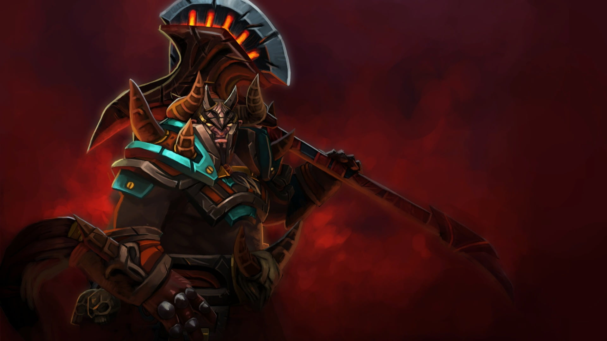

Durable Initiator / Disabler / Nuker / Escape / Complexity
Dota 2
Centaur Warrunner
Bradwarden is the champion of the centaur race, having won his
honor by killing every challenger in the arena of Omexe.
More details »
More details »
Dota 2
Dragon Knight

As Sir Davion slew Slyrak in arranged combat, the Eldwurm's blood
mingled with his own, sealing their essences together. He was no
longer a dragon-slayer, but a Dragon Knight.
More details »
More details »
Centaur Warrunner
"The hoofbeats of your heart beat no more."
Dragon Knight
"Live by the sword, die by the dragon."